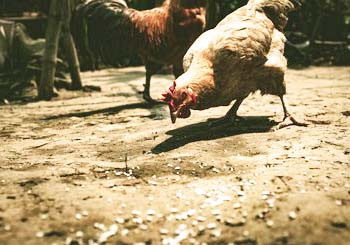

Bear Lake Junior Livestock County 4-H and FFA Fair Activities Will Continue as Normal
by Bear Lake County Extension Office
The Bear Lake Junior Livestock Committee and 4-H Personnel met Thursday evening to make plans to move forward with a reduced version of the fair.
The County Commissioners realize the kids have put in countless hours raising and working with their animals to be ready for the fair and feel we can safely have all the 4-H and FFA activities. The fair is a culminating event that marks the end of countless hours of hard work, effort, and learning. 4-H and FFA livestock projects effectively help youth develop critical life skills such as accepting responsibility, getting along with others, setting goals, decision making, and interpersonal skills.
The activities will be held August 11-15. The 4-H Horse Show will kick off the events and will be held Tuesday morning. On Thursday morning, the youth will exhibit their swine and lamb projects followed by poultry and rabbit shows in the afternoon. The evening will finish with the 4-H Style Review. The beef show will be held Friday morning, followed by the dairy show. After lunch the “best of the best” will compete in the Round Robin, crowning the overall livestock showman.